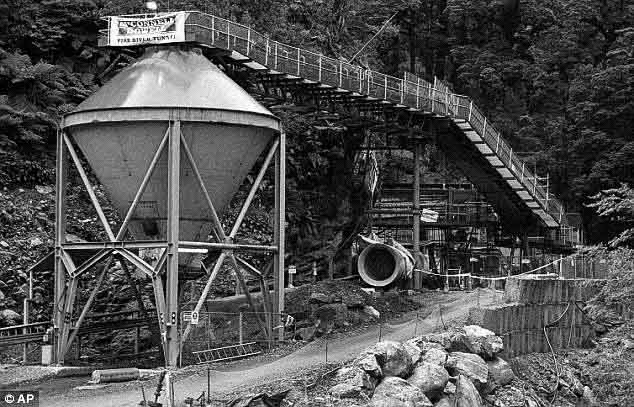
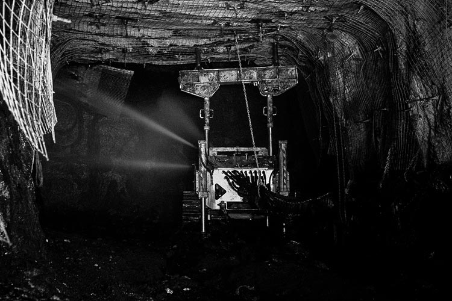
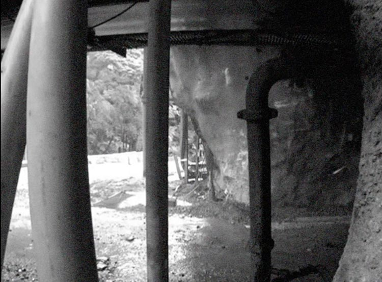
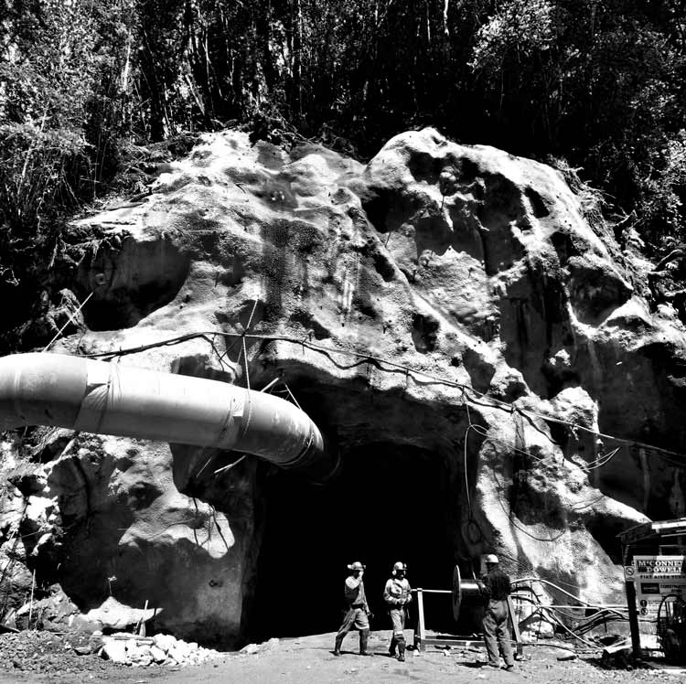
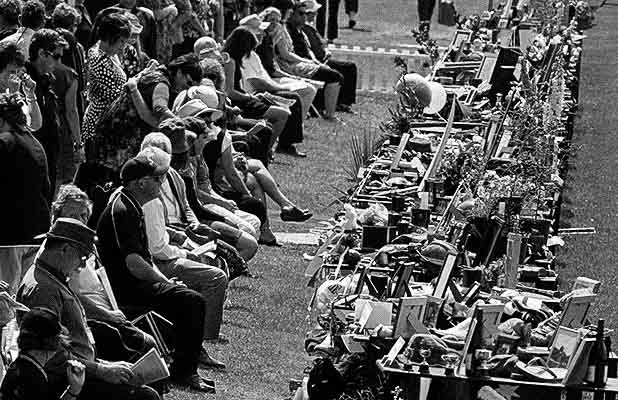

Timeline
An explosion ripped through the remote
Pike River mine
Pike River mine
Killing 29 men.
19–24 November,
2010
2010
West Coast,
New Zealand
New Zealand
Noon
15:45
First reports of an explosion at Pike River mine, 50km north-east of Greymouth.
16:53
Emergency services begin to respond to the situation at Pike River.
17:09
First unconfirmed reports of around 25 people trapped in the mine.
17:23
Police issue first statement to media saying they were at the Pike River Coal Processing Plant in Atarau.
17:24
Police confirm there had been reports of an explosion at Pike River Mine.

The entrance to the Pike River Coal mine
Evening
17:51
The first reports that two miners have surfaced from the mine; 33 still unaccounted for.
18:11
St John activates its national emergency response plans, six ambulances are at the scene and three rescue helicopters are on the way.
18:29
Inspector John Canning reports miners could be 1,500 metres underground.
19:14
Pike River chief Peter Whittall says communication with the afternoon shift was lost at 4.10pm and he does not know of any fatalities.
19:29
The two miners who escaped indicated that three of their colleagues were also on their way to the surface. The mine entrance is about 2.2km long.
20:00
Trucks carrying air vents have just crossed the cordon at the entrance to the mine and two utility vehicles carrying stretchers have also driven in.
20:02
Energy Minister Gerry Brownlee says the Government will offer whatever assistance is needed.
20:24
St John confirms it has set up for a “long operation” in the hopes for a rescue attempt.
21:12
Pike River spokesman, says 27 miners and contractors remain underground - 15 employees and 12 contractors.
21:15
Families of the trapped miners are being asked to gather at the Moonlight Hall near Blackball to wait for news.
Saturday 20th
Tunnel entrance
Morning
06:48
Rescuers are still at the mine but have have been unable to get underground or make contact with the miners inside.
08:02
Huge media contingent gathers for a press conference. Gerry Brownlee and Kate Wilkinson arrive.
08:17
Peter Whittall says there are 29 people below ground, and there were no prior concerns about methane gas.
08:18
Inspector Gary Knowles, Tasman police area commander vows to “bring the boys home.”
08:19
One of the miners who walked out of the mine, was knocked to the ground by the explosion and knocked unconscious.
08:20
Both miners who walked out are shaken with minor injuries, Whittall states they have suffered shock.
08:21
Whittall assures family they are doing all they can to bring the men out. He has no idea what has caused the methane explosion.
08:25
Whittall says the men underground will be within several hundreds metres of each other.
08:27
The hopes are that the miners are located at the end of the fresh air vent, sitting tight and waiting for rescue.
08:34
The youngest man underground is 17 while the oldest is 62 years old. A mix of New Zealanders, Australians and British nationals make up the 29 men.
09:41
Police say specialist gas testing equipment has been flown in from Australia this morning to help with the rescue operation.
12:04
Search and rescue staff set to enter West Coast mine after tests come back clear.
13:12
Police say they are still awaiting tests before entering the mine, despite the mayor saying the OK has been given.
14:00
Whittall says air quality tests from this morning were inconclusive with no trends visible yet as not enough samples had been done to be conclusive.
14:25
Prime Minister John Key says "hearts and thoughts" go out to families. He says support has been offered from overseas, including Prince William.
16:00
Police withdraw teams checking air samples at the mine because of a drop in air quality.

Pike River memorial service, 2010 (Te Ara)
Evening
17:30
Pike River Coal chairman John Dow repeats police comments on the prospect of a rescue that night, saying it was unlikely.
18:00
Gary Knowles, the Tasman Police District Commander and the man in charge, says police will resume air testing in the morning.
19:35
Police confirm there will be no rescue attempt on Saturday, because of poor air quality within the mine.
Sunday 21st
Pike River memorial service, 2010 (Te Ara)
Morning
07:26
All Blacks and Black Caps send message of support. Richie McCaw says their “hearts” go out to families and friends of miners.
08:15
More than 150 media outlets from around the world attend the latest press update.
08:19
Whittall say there is heating of “some sort” underground, which is generating poisonous gases.
08:22
Pike River chief executive Peter Whittall says a rig will drill down into the mine to take samples.
08:30
Commander Gary Knowles, says “I am not going to put 16 guys underground and risk losing them to a half-arsed rescue.”
08:31
Pike River chief executive Peter Whittall says “we just don’t know what ventilation devices are still standing up.”
10:02
Energy Minister Gerry Brownlee said he was drawing hope from the Chilean rescue.
10:12
The families of the missing miners trapped underground arrive at the Pike River Mine site.
14:00
Mayor Tony Kokshoorn, says anxiety levels among the families were rising by the hour. “People are starting to despair, its on their faces.”

CCTV footage of Pike River Mine explosion
Evening
22:00
Mine safety experts will continue to monitor gas levels through the night. This will be the miners third night trapped underground.
Monday 22nd
Pike River Coal mine manager Peter Whittall
Morning
07:16
Helen Clark tweets, “My thoughts are with all the men trapped in the Pike River mine, and with their families and communities.”
07:30
Mayor Tony Kokshoorn, says a rescue needs to begin today for the sake of the trapped miners’ families.
07:45
Prime Minister John Key, states he is due to take the Australian and British High Commissioners to the West Coast in about an hour.
08:10
Families of the 29 miners begin arriving at a meeting to update them on the rescue mission.
10:30
Police say the conservation department has agreed to cut out a path to the ventilation shaft.
10:34
Commander Gary Knowles reads the names and ages of the 29 trapped miners underground.
10:41
Prime Minister John Key says there’s no question from family members that they’re feeling “high levels of fear and frustration.”
11:00
Drilling of the bore-hole reached 110m at 11am. Police say it will slow as it approaches target depth of 160 metres.
14:45
The latest gas report shows that there’s a possibility heating underground still exists.
Army rescue robot has broken down in the Pike River mine
Evening
17:30
At the media press conference, police for the first time say they are planning for all outcomes, including the potential loss of life.
17:33
Whittall says they’re confident that the robot will get through as soon as the gas levels allow. Positive results thus far.
18:10
Photos of the 29 trapped miners are released to the public by the police.
21:57
Drilling operation has gotten down to a depth of 142 metres, however the crews has encountered heavy rock formations and a break through was still some hours away.
Tuesday 23rd
Excavating rock in Pike River access tunnel
Morning
07:52
The families of 29 trapped miners are beginning to arrive to hear the latest news from the rescuers.
07:54
Drilling the hole progressed overnight, with plans to lower a cameras once it is finished.
07:59
Twice-daily briefings are being held at the Grey district council offices by emergency services and Pike River Coal managers.
09:20
The rescue robot has been sent into the mine but failed due to mechanical issues after encountering water.
09:39
Families are angry at the lack of a back-up. “Realistically they should have had a second one there.”
10:07
A new community drop-in centre at the Salvation Army Citadel at 147 Tainui Street has been opened.
10:12
The drop-in centre is a place where the community can get up-to-date information on the rescue effort as well as accessing support services.
10:37
Whittall says the bore hole is 142m deep - and drillers estimate it will be five hours before it gets through.
10:38
Police say “The longer it goes on, hopes fade and we have to be realistic”.
10:39
Police say the robot, which broke down 550m in to the mine, will no longer be used.
10:40
A rescue team member had to be evacuated, injured during drilling. He has a sprained ankle.
10:41
A new hole planned is very close to where they believe some men were working however no new drill rig is yet on site.
13:00
Reports that of a second robot is at the scene. Defence minister confirms it is there but is “unlikely” to be used today.
13:03
Two further robots are expected to arrive from Western Australia and United States.
14:00
St Matthew in Auckland are having a personal vigil, light candles and pray for the trapped miners
15:00
Grey District Mayor, when discussing the Australian robot, says: “It would tell us if they’re dead or alive - it’s that simple.”
16:00
Video of the explosion is expected to be released at 5.30pm to the families attending the briefing.

Pike River Mine entrance
Evening
17:55
Father of missing miner Zen Drew, says footage was “informative and enlightening.”
17:57
They confirm the situation is “bleak”. Police minister Judith Collins says she believes the police have done a fantastic job.
17:58
Police Commissioner Howard Broad says the mine is an extremely dangerous situation - “I can’t stress that enough”.
18:00
Police say the footage of the blast “was continuous and the frightening thing is, it was probably up to 2.5km from the source.”
18:15
Whittall says the drilling experienced significant delay and is now at the 145-150m mark with 10m to go.
18:16
A Camera was lowered to the ‘fresh air’ space and showed minor damage to area. But no sign of the miners.
18:18
Video of footage from explosion shown to the media. Whittall says it’s ‘not new’ but strong symbol of the ‘violence’ of the explosion.
18:23
He says he didn’t deliberately withhold the footage, but 'time has coupled with the magnitude of the blast.’
Wednesday 24th
Memorial site, 2010
Morning
06:00
Confirmation that the first robot, which had broken down, was restarted and went to 1000m before it ran out of battery.
06:05
A second NZDF robot is now in the mine while a third, flown in from Australia, arrived at Hokitika.
08:00
Families of trapped miners gather to hear the rescue plans. The next media briefing will take place at 10am.
09:30
Families say there wasn’t much to update, gases still volatile, anger is building about delays in rescue attempts.
09:45
Mayor confirms that bore-drill has broken through. A lot of hot air has rushed up the small bore shaft.
10:13
Press conference gets underway. Police spokesman confirms robot has recorded footage within the mine.
10:15
The second robot has half an hour of time left in terms of capabilities. Footage will be analysed from that today.
10:17
The gas information collected shows that levels “are off the limit”, unsafe, still not appropriate for rescue teams to go down.
10:23
Whittall says drilling overnight was successful, the hole was deeper than expected.
10:24
“As expected, the air that came out was very high in methane and carbon monoxide, and low in oxygen.”
10:27
The cap lamp of one survivor was found, still working. “Manufacturer will be happy to hear that,” says Whittall.
10:30
Whittall says they got poor quality footage from bore-hole camera. “It’s pretty much just black... it doesn’t show that anyone is there”.
12:35
Police Commissioner Howard Broad speaks at parliament and says there was only a “glimmer of hope” for survivors.
12:37
He says it could take “quite a long time before the environment underground at the site was safe enough for rescuers to enter.
14:37
All 29 of the trapped miners are believed to be dead, after a alert of a second explosion.
14:38
Pike River Coal CEO Peter Whittall addresses the media after alerting families of the blast.
16:55
Announcement to the media that a devastating second explosion has occurred at the mine.

Pike River memorial service, 2010 (Te Ara)
Evening
18:30
Prime Minister John Key calls the disaster at Pike River a national tragedy.